Capítulo 15 Regressão linear
15.2 Exemplo: altura e peso
Pessoas mais altas tendem a ser mais pesadas?
Temos dados de \(68\) pessoas, com alturas em cm e pesos em kg:
-
O gráfico de dispersão (scatter plot) é o ideal para visualizar a correlação entre duas variáveis numéricas:
grafico_pa <- peso_altura %>% ggplot(aes(altura, peso)) + geom_point() + labs( x = 'altura (cm)', y = 'peso\n(kg)' ) + scale_x_continuous(breaks = seq(150, 200, 5)) grafico_pa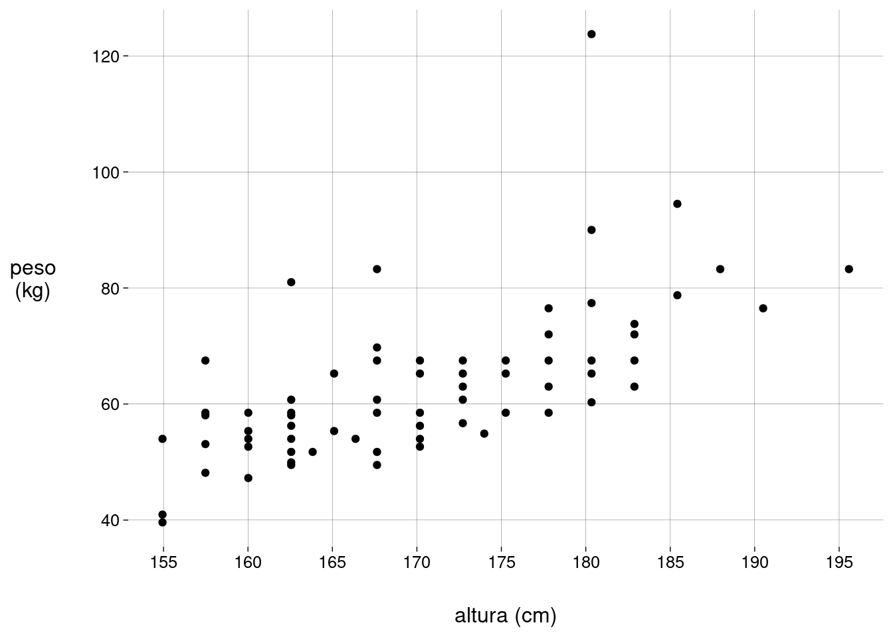 -
Podemos pedir ao R para traçar uma reta resumindo a variação do peso em função da altura:
regressao <- grafico_pa + geom_smooth(method = 'lm', formula = y ~ x, se = FALSE) regressao
Esta é a reta de regressão, ou reta de melhor ajuste.
-
Se tivermos a equação desta reta, podemos
Explicar como o peso varia de acordo com a altura.
Prever o peso de pessoas cujas alturas conhecemos, mas que não estavam nos dados originais.
A equação da reta vai ser da forma \(\quad\) \(\widehat{\text{peso}}(x) = \widehat{b_0} + \widehat{b_1} \cdot \text{altura}(x)\).
Os “chapéus” em \(\widehat{\text{peso}}\), \(\widehat{b_0}\), e em \(\widehat{b_1}\) significam que os valores são estimativas (baseadas na amostra), e não os valores verdadeiros da população.
Neste exemplo, a equação da reta é \(\quad\) \(\widehat{\text{peso}}(x) = -89{,}81 + 0{,}90 \cdot \text{altura}(x)\).
-
Dando nomes às coisas:
Neste exemplo, altura é o preditor.
Neste exemplo, peso é a variável de resposta.
O intercepto é o valor de \(\widehat{b_0} = -89{,}81\). Neste exemplo, corresponderia ao peso de uma pessoa com altura zero! Claro que isto não faz sentido na realidade física, mas é um valor que faz parte da definição da reta. Aliás, serve como aviso de que a reta de regressão só faz sentido dentro da faixa de valores dos dados que temos.
A inclinação é o valor de \(\widehat{b_1} = 0{,}90\). Neste exemplo, significa que um aumento de \(1\)cm na altura corresponde a um aumento de \(0{,}90\)kg no peso.
-
O resíduo de um indivíduo \(x\) do conjunto de dados é a diferença entre o peso verdadeiro de \(x\) e o peso estimado para \(x\) pela equação.
Por exemplo, para as duas pessoas com altura próxima a \(1{,}65\)m:
altura
peso
peso_estimado
resíduo
165,1
55,35
58,78
-3,43
165,1
65,25
58,78
6,47
15.3 Como achar a equação da melhor reta? Com Cálculo!
Qual reta queremos? A que deixe o mínimo possível de resíduos, de certa forma.
Mas, em vez de considerar os resíduos, que podem ser negativos ou positivos, vamos considerar os quadrados dos resíduos, mais ou menos como no cálculo da variância.
-
Então, para cada indivíduo \(x_i\), calculamos o resíduo e elevamos ao quadrado; depois, somamos tudo:
\[ S = \sum_i \left[\text{peso}(x_i) - \widehat{\text{peso}}(x_i)\right]^2 \]
Esta soma \(S\) é a quantidade que queremos minimizar: a soma dos quadrados dos resíduos.
-
Eis alguns exemplos de retas diferentes, com seus respectivos valores de S:
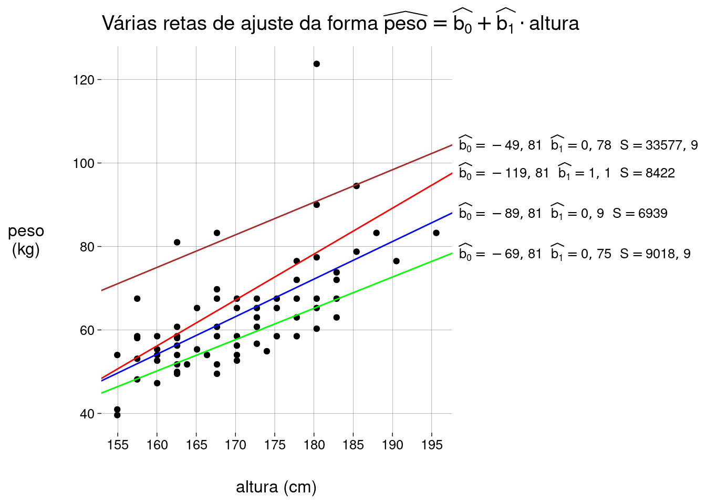 Mas lembre-se de que \(\widehat{peso}(x_i) = \widehat{b_0} + \widehat{b_1} \cdot \text{altura}(x_i)\).
-
Então, a soma fica
\[ S = \sum_i \left[\;\text{peso}(x_i) - (\widehat{b_0} + \widehat{b_1} \cdot \text{altura}(x_i))\;\right]^2 \]
No fim das contas, \(S\) é uma função de duas variáveis: \(\widehat{b_0}\) e \(\widehat{b_1}\) (lembre-se de que os pesos e alturas das pessoas são conhecidos).
Podemos usar as ferramentas do Cálculo para achar os valores de \(\widehat{b_0}\) e \(\widehat{b_1}\) que minimizam esta função.
-
Vamos um passo de cada vez.
Vamos abreviar “\(\text{peso}(x_i)\)” como \(x_i\) e “\(\text{altura}(x_i)\)” como \(y_i\), só para escrever menos.
Para lembrarmos que \(S\) é uma função de \(\widehat{b_0}\) e \(\widehat{b_1}\), vamos escrever \(S\left(\widehat{b_0}, \widehat{b_1}\right)\):
\[ \begin{align*} S\left(\widehat{b_0}, \widehat{b_1}\right) &= \sum_i \left[\;y_i - (\widehat{b_0} + \widehat{b_1} x_i) \;\right]^2 \end{align*} \]
-
Desenvolvendo o quadrado:
\[ \begin{align*} S\left(\widehat{b_0}, \widehat{b_1}\right) &= \sum_i \left[\; y_i^2 - 2y_i(\widehat{b_0} + \widehat{b_1}x_i) + (\widehat{b_0} + \widehat{b_1}x_i)^2 \;\right] \end{align*} \]
-
Desenvolvendo o quadrado na última parcela:
\[ \begin{align*} S\left(\widehat{b_0}, \widehat{b_1}\right) &= \sum_i \left[\; y_i^2 - 2y_i(\widehat{b_0} + \widehat{b_1}x_i) + \widehat{b_0}^2 + 2\widehat{b_0}\widehat{b_1}x_i + \widehat{b_1}^2x_i^2 \;\right] \end{align*} \]
-
Desenvolvendo a parte com parênteses:
\[ \begin{align*} S\left(\widehat{b_0}, \widehat{b_1}\right) &= \sum_i \left[\; y_i^2 - 2y_i\widehat{b_0} - 2y_i\widehat{b_1}x_i + \widehat{b_0}^2 + 2\widehat{b_0}\widehat{b_1}x_i + \widehat{b_1}^2x_i^2 \;\right] \end{align*} \]
-
Separando os somatórios:
\[ \begin{align*} S\left(\widehat{b_0}, \widehat{b_1}\right) &= \sum_i y_i^2 - \sum_i 2y_i\widehat{b_0} - \sum_i 2y_i\widehat{b_1}x_i + \sum_i \widehat{b_0}^2 + \sum_i 2\widehat{b_0}\widehat{b_1}x_i + \sum_i \widehat{b_1}^2x_i^2 \end{align*} \]
-
Jogando tudo que não depende de \(i\) para fora dos somatórios.
Além disso, \(\sum_i \widehat{b_0}^2\) é simplesmente \(n\widehat{b_0}^2\), onde \(n\) é o total de pessoas.
\[ \begin{align*} S\left(\widehat{b_0}, \widehat{b_1}\right) &= \sum_i y_i^2 - 2\widehat{b_0}\sum_i y_i - 2\widehat{b_1}\sum_i x_iy_i + n\widehat{b_0}^2 + 2\widehat{b_0}\widehat{b_1}\sum_i x_i + \widehat{b_1}^2\sum_i x_i^2 \end{align*} \]
-
Pronto. Agora vamos achar as derivadas parciais desta função:
\[ \begin{align*} \frac{\partial S}{\partial \widehat{b_0}} &= -2\sum_i y_i + 2n\widehat{b_0} + 2\widehat{b_1}\sum_i x_i \\ \\ \frac{\partial S}{\partial \widehat{b_1}} &= -2\sum_i x_i y_i + 2\widehat{b_0}\sum_i x_i + 2\widehat{b_1}\sum_i x_i^2 \end{align*} \]
Os valores de \(\widehat{b_0}\) e \(\widehat{b_1}\) para os quais estas duas derivadas são iguais a zero são os valores que estamos procurando.
-
Para \(\frac{\partial S}{\partial \widehat{b_0}}\):
\[ \begin{align*} & -2\sum_i y_i + 2n\widehat{b_0} + 2\widehat{b_1}\sum_i x_i = 0 \\ \\ \iff & -2\frac{\sum_i y_i}n + \frac{2n\widehat{b_0}}n + 2\widehat{b_1}\frac{\sum_i x_i}n = 0 & \text{(dividimos tudo por }n > 1\text{)} \\ \\ \iff & -2\overline y + 2\widehat{b_0} + 2\widehat{b_1}\overline x = 0 & \text{(apareceram médias!)} \\ \\ \iff & \widehat{b_0} = \frac{2\overline y - 2\widehat{b_1} \overline x}{2} \\ \\ \iff & \widehat{b_0} = \overline y - \widehat{b_1} \overline x \end{align*} \]
-
Para \(\frac{\partial S}{\partial \widehat{b_1}}\):
\[ \begin{align*} & -2\sum_i x_i y_i + 2\widehat{b_0}\sum_i x_i + 2\widehat{b_1}\sum_i x_i^2 = 0 \\ \\ \iff & -\sum_i x_i y_i + \widehat{b_0}\sum_i x_i + \widehat{b_1}\sum_i x_i^2 = 0 & \text{(dividimos tudo por }2\text{)} \\ \\ \iff & -\sum_i x_i y_i + (\overline y - \widehat{b_1} \overline x)\sum_i x_i + \widehat{b_1}\sum_i x_i^2 = 0 & \text{(substituímos }\widehat{b_0}\text{)} \\ \\ \iff & -\sum_i x_i y_i + \overline y\sum_i x_i - \widehat{b_1} \overline x\sum_i x_i + \widehat{b_1}\sum_i x_i^2 = 0 \\ \\ \iff & -\sum_i x_i y_i + \frac{\sum_i y_i\sum_i x_i}n - \widehat{b_1} \frac{\left(\sum_i x_i\right)^2}n + \widehat{b_1}\sum_i x_i^2 = 0 & \text{(expandimos }\overline x\text{ e }\overline y\text) \\ \\ \iff & \widehat{b_1} \left(\sum_i x_i^2 - \frac{\left(\sum_i x_i\right)^2}n\right) = \sum_i x_i y_i - \frac{\sum_i y_i\sum_i x_i}n & \text{(isolamos }\widehat{b_1}\text) \\ \\ \iff & \widehat{b_1} = \frac {\sum_i x_i y_i - \frac{\sum_i y_i\sum_i x_i}n} {\sum_i x_i^2 - \frac{\left(\sum_i x_i\right)^2}n} \\ \\ \iff & \widehat{b_1} = \frac {n\sum_i x_i y_i - \sum_i y_i\sum_i x_i} {n\sum_i x_i^2 - \left(\sum_i x_i\right)^2} \end{align*} \]
A rigor, precisamos calcular as segundas derivadas parciais para garantir que achamos um mínimo, e não um máximo ou um ponto de sela, mas vamos pular esta parte.
A expressão para \(\widehat{b_1}\) é bem feia, mas podemos escrevê-la de um jeito mais bonito.
-
Vamos lembrar as definições:
-
A variância amostral da variável aleatória \(X\) pode ser escrita como
\[ \begin{align*} s^2_x &= \frac{n}{n-1} \left[ E(X^2) - [E(X)]^2 \right] \\ \\ &= \frac{n}{n-1} \left[ \frac{\sum_i x_i^2}{n} - (\overline{x})^2 \right] \\ \\ &= \frac{\sum_i x_i^2}{n - 1} - \frac{n(\overline{x})^2}{n - 1} \end{align*} \]
Como a reta de regressão é construída sobre uma amostra, precisamos usar a variância amostral, com denominador \(n - 1\) em vez de denominador \(n\). Isto equivale a multiplicar a variância populacional pela fração \(\frac{n}{n-1}\).
-
A covariância amostral de \(X\) e \(Y\) é:
\[ \begin{align*} s_{xy} &= \frac{n}{n-1} \left[ E(XY) - E(X)E(Y) \right] \\ \\ &= \frac{n}{n-1} \left[ \frac{\sum_i x_i y _i}{n} - \overline{x}\;\overline{y} \right] \\ \\ &= \frac{\sum_i x_i y_i}{n - 1} - \frac{n\;\overline{x}\;\overline{y}}{n - 1} \\ \\ &= \frac{\sum_i x_i y_i}{n - 1} - \frac{\overline{x}\;\sum_i{y_i}}{n - 1} \end{align*} \]
O último passo se justifica porque \(n\overline{y} = \sum_i y_i\).
-
A correlação entre \(X\) e \(Y\) é:
\[ r = \frac{s_{xy}}{s_x s_y} \]
Lembre-se de que \(s_x = \sqrt{s_x^2}\) é o desvio-padrão amostral de \(X\), e \(s_y = \sqrt{s_y^2}\) é o desvio-padrão amostral de \(Y\).
-
Vamos transformar a fórmula que achamos para \(\widehat{b_1}\).
-
Começamos com
\[ \widehat{b_1} = \frac {n\sum_i x_i y_i - \sum_i y_i\sum_i x_i} {n\sum_i x_i^2 - \left(\sum_i x_i\right)^2} \]
-
Vamos multiplicar em cima e embaixo por \(\frac{1}{n(n-1)}\); lembre-se de que \(n > 1\), o que elimina o perigo de dividir por zero.:
\[ \widehat{b_1} = \frac{ \frac{\sum_i x_i y_i}{n - 1} - \frac{\sum_i y_i \sum_i x_i}{n(n - 1)} } { \frac{\sum_i x_i^2}{n - 1} - \frac{\left(\sum_i x_i\right)^2}{n(n - 1)} } \]
-
Lembrando que
\[ \frac{\sum_i x_i}{n} = \overline{x} \]
e que (o que é equivalente)
\[ n\overline{x} = \sum_i x_i \]
temos que
\[ \widehat{b_1} = \frac{ \frac{\sum_i x_i y_i}{n - 1} - \frac{\overline{x}\sum_i y_i}{n - 1} } { \frac{\sum_i x_i^2}{n - 1} - \frac{n(\overline{x})^2}{n - 1} } \]
-
As definições de \(s_{xy}\) e de \(s^2_x\) apareceram!
\[ \widehat{b_1} = \frac{s_{xy}}{s_x^2} \]
-
Para ficar mais bonito, multiplicamos em cima e embaixo por \(s_y\) — que é maior que zero (senão, todos os \(y_i\) teriam o mesmo valor!):
\[ \widehat{b_1} = \frac{s_{xy}}{s_x s_y} \cdot \frac{s_y}{s_x} \]
-
E acabamos com
\[ \widehat{b_1} = r \cdot \frac{s_y}{s_x} \]
-
Agora ficou fácil de entender: a inclinação da reta é a correlação entre \(X\) e \(Y\) multiplicada pela razão entre os desvios-padrão de \(Y\) e \(X\).
Resumindo
Para construir a reta de regressão, com equação
\[ \widehat{y}(x) = \widehat{b_0} + \widehat{b_1} x \]
basta usar as fórmulas
\[ \begin{cases} \widehat{b_0} =& \overline y - \widehat{b_1} \overline x \\ \\ \widehat{b_1} =& r \cdot \frac{s_y}{s_x} \end{cases} \]
-
No nosso exemplo de \(x=\) alturas e \(y=\) pesos:
peso <- peso_altura$peso altura <- peso_altura$altura xbarra <- mean(altura) sx <- sd(altura) ybarra <- mean(peso) sy <- sd(peso) r <- cor(altura, peso) b1 <- r * sy / sx b0 <- ybarra - b1 * xbarra cat( paste( 'b0 =', round(b0, 2), '\nb1 =', round(b1, 2) ) )## b0 = -89,81 ## b1 = 0,9
15.3.1 Exercícios
Unidades
-
No nosso exemplo de alturas e pesos:
Qual é a unidade de \(\widehat{b_0}\)?
Qual é a unidade de \(\widehat{b_1}\)?
Por que isto faz sentido no contexto de \(\widehat{\text{peso}}(x) = \widehat{b_0} + \widehat{b_1} \cdot \text{altura}(x)\)?
Regressão com variáveis padronizadas
Quais são os valores de \(\widehat{b_0}\) e \(\widehat{b_1}\) quando as variáveis \(X\) e \(Y\) estão padronizadas? Use as fórmulas para \(\widehat{b_0}\) e \(\widehat{b_1}\).
Quando as variáveis estão padronizadas, qual o valor máximo da inclinação da reta de regressão? E o valor mínimo?
-
Confirme suas respostas usando o R:
Padronize as variáveis
alturaepesodo exemplo, usando a funçãoscale.-
Compute, sobre as variáveis padronizadas, os valores de
\(\overline{\text{peso}}\),
\(\overline{\text{altura}}\),
\(s_{\text{peso}}\),
\(s_{\text{altura}}\),
\(r\), a correlação entre
alturaepeso,Os valores de \(\widehat{b_0}\) e \(\widehat{b_1}\) usando as fórmulas.
Construa o scatter plot das variáveis padronizadas e use
geom_smooth(como no exemplo acima) para desenhar a reta de regressão.Estime (pelo gráfico) o intercepto da reta e compare com a sua resposta para \(\widehat{b_0}\).
Estime (pelo gráfico) a inclinação da reta e compare com a sua resposta para \(\widehat{b_1}\).
Altura média corresponde a peso médio
-
Usando somente as fórmulas
\[ \begin{cases} \widehat{b_0} =& \overline y - \widehat{b_1} \overline x \\ \\ \widehat{b_1} =& r \cdot \frac{s_y}{s_x} \end{cases} \]
e a equação
\[ \widehat{y}(x) = \widehat{b_0} + \widehat{b_1} \cdot x \]
mostre que a altura média corresponde ao peso médio, ou seja, que
\[ \widehat{y}(\overline{x}) = \overline{y} \]
Soma dos resíduos
Uma das consequências da maneira como achamos a reta de melhor ajuste é que a soma de todos os resíduos é zero.
-
Confira isto no nosso exemplo de alturas e pesos:
-
Acrescente duas colunas ao data frame
peso_altura:peso_chapeu, com os valores de \(\widehat{\text{peso}}(x)\) para cada pessoa \(x\).residuo, com os valores depeso - peso_chapeu.
Use
summarize()para obter a soma dos resíduos.
-
-
Em símbolos:
\[ \sum_i \left(y_i - \widehat{y}(x_i) \right) \;=\; 0 \]
Usando as definições de \(\widehat{y}(x_i)\), de \(\widehat{b_0}\), e de \(\widehat{b_1}\), prove esta igualdade.
15.4 Em R
A função
lm(linear model) acha a reta de regressão e retorna muitas informações sobre o modelo.-
No nosso exemplo:
modelo <- lm(peso ~ altura, data = peso_altura) O argumento
peso ~ alturaé uma fórmula, um tipo de expressão que faz parte da sintaxe de R.-
O objeto retornado por
lmé uma lista com muitos elementos:str(modelo)## List of 12 ## $ coefficients : Named num [1:2] -89,806 0,899 ## ..- attr(*, "names")= chr [1:2] "(Intercept)" "altura" ## $ residuals : Named num [1:68] -6,8 1,33 -11,99 1,75 ... ## ..- attr(*, "names")= chr [1:68] "1" "2" "3" ... ## $ effects : Named num [1:68] -521,75 70,83 -11 2,32 ... ## ..- attr(*, "names")= chr [1:68] "(Intercept)" "altura" "" ... ## $ rank : int 2 ## $ fitted.values: Named num [1:68] 56,3 54 72,3 56,3 ... ## ..- attr(*, "names")= chr [1:68] "1" "2" "3" ... ## $ assign : int [1:2] 0 1 ## $ qr :List of 5 ## ..$ qr : num [1:68, 1:2] -8,246 0,121 0,121 0,121 ... ## .. ..- attr(*, "dimnames")=List of 2 ## .. .. ..$ : chr [1:68] "1" "2" "3" ... ## .. .. ..$ : chr [1:2] "(Intercept)" "altura" ## .. ..- attr(*, "assign")= int [1:2] 0 1 ## ..$ qraux: num [1:2] 1,12 1,12 ## ..$ pivot: int [1:2] 1 2 ## ..$ tol : num 0,0000001 ## ..$ rank : int 2 ## ..- attr(*, "class")= chr "qr" ## $ df.residual : int 66 ## $ xlevels : Named list() ## $ call : language lm(formula = peso ~ altura, data = peso_altura) ## $ terms :Classes 'terms', 'formula' language peso ~ altura ## .. ..- attr(*, "variables")= language list(peso, altura) ## .. ..- attr(*, "factors")= int [1:2, 1] 0 1 ## .. .. ..- attr(*, "dimnames")=List of 2 ## .. .. .. ..$ : chr [1:2] "peso" "altura" ## .. .. .. ..$ : chr "altura" ## .. ..- attr(*, "term.labels")= chr "altura" ## .. ..- attr(*, "order")= int 1 ## .. ..- attr(*, "intercept")= int 1 ## .. ..- attr(*, "response")= int 1 ## .. ..- attr(*, ".Environment")=<environment: R_GlobalEnv> ## .. ..- attr(*, "predvars")= language list(peso, altura) ## .. ..- attr(*, "dataClasses")= Named chr [1:2] "numeric" "numeric" ## .. .. ..- attr(*, "names")= chr [1:2] "peso" "altura" ## $ model :'data.frame': 68 obs. of 2 variables: ## ..$ peso : num [1:68] 49,5 55,4 60,3 58,1 ... ## ..$ altura: num [1:68] 163 160 180 163 ... ## ..- attr(*, "terms")=Classes 'terms', 'formula' language peso ~ altura ## .. .. ..- attr(*, "variables")= language list(peso, altura) ## .. .. ..- attr(*, "factors")= int [1:2, 1] 0 1 ## .. .. .. ..- attr(*, "dimnames")=List of 2 ## .. .. .. .. ..$ : chr [1:2] "peso" "altura" ## .. .. .. .. ..$ : chr "altura" ## .. .. ..- attr(*, "term.labels")= chr "altura" ## .. .. ..- attr(*, "order")= int 1 ## .. .. ..- attr(*, "intercept")= int 1 ## .. .. ..- attr(*, "response")= int 1 ## .. .. ..- attr(*, ".Environment")=<environment: R_GlobalEnv> ## .. .. ..- attr(*, "predvars")= language list(peso, altura) ## .. .. ..- attr(*, "dataClasses")= Named chr [1:2] "numeric" "numeric" ## .. .. .. ..- attr(*, "names")= chr [1:2] "peso" "altura" ## - attr(*, "class")= chr "lm" -
Vamos ver os mais importantes, usando funções auxiliares para acessá-los:
-
Os coeficientes da reta:
coef(modelo)## (Intercept) altura ## -89,8056787 0,8988101 -
Os valores de \(\widehat{y}(x)\) para todas as observações \(x\):
fitted(modelo)## 1 2 3 4 5 6 7 8 9 ## 56,30488 54,02191 72,28573 56,30488 51,73893 58,58786 57,44637 66,57828 59,72935 ## 10 11 12 13 14 15 16 17 18 ## 56,30488 56,30488 54,02191 51,73893 81,41764 49,45595 51,73893 54,02191 60,87084 ## 19 20 21 22 23 24 25 26 27 ## 54,02191 63,15382 63,15382 56,30488 49,45595 63,15382 51,73893 60,87084 67,71977 ## 28 29 30 31 32 33 34 35 36 ## 70,00275 56,30488 65,43679 67,71977 65,43679 56,30488 65,43679 65,43679 51,73893 ## 37 38 39 40 41 42 43 44 45 ## 60,87084 65,43679 60,87084 70,00275 60,87084 60,87084 70,00275 56,30488 63,15382 ## 46 47 48 49 50 51 52 53 54 ## 54,02191 49,45595 58,58786 85,98359 72,28573 56,30488 60,87084 70,00275 76,85168 ## 55 56 57 58 59 60 61 62 63 ## 74,56871 76,85168 74,56871 74,56871 74,56871 67,71977 79,13466 63,15382 72,28573 ## 64 65 66 67 68 ## 70,00275 72,28573 63,15382 72,28573 72,28573 -
Os resíduos de todas as observações:
resid(modelo)## 1 2 3 4 5 6 ## -6,80488467 1,32809288 -11,98572754 1,74511533 6,31107043 -3,23786223 ## 7 8 9 10 11 12 ## -5,69637345 -11,67828366 -5,72935100 -6,35488467 -4,55488467 -1,37190712 ## 13 14 15 16 17 18 ## -3,58892957 -4,91763776 -8,50595201 1,36107043 4,47809288 -0,12083978 ## 19 20 21 22 23 24 ## -0,02190712 -6,90381733 -10,50381733 4,44511533 -9,85595201 -4,65381733 ## 25 26 27 28 29 30 ## 15,76107043 -2,37083978 -0,21977244 1,99725001 -2,30488467 -8,73679489 ## 31 32 33 34 35 36 ## -9,21977244 -2,43679489 24,69511533 -4,68679489 -0,18679489 6,76107043 ## 37 38 39 40 41 42 ## 6,62916022 2,06320511 -9,12083978 -7,00274999 22,37916022 -11,37083978 ## 43 44 45 46 47 48 ## -11,50274999 -0,05488467 2,09618267 -6,77190712 4,54404799 6,66213777 ## 49 50 51 52 53 54 ## -2,73359286 5,11427246 2,19511533 8,87916022 -2,50274999 1,89831735 ## 55 56 57 58 59 60 ## -0,76870510 17,64831735 -7,06870510 -11,56870510 -2,56870510 -2,46977244 ## 61 62 63 64 65 66 ## 4,11533980 -9,15381733 51,46427246 6,49725001 -4,78572754 4,34618267 ## 67 68 ## 17,71427246 -7,03572754 -
Aliás, como prometido, a soma dos resíduos é zero, salvo erro de arredondamento:
## [1] 0,00000000000002731149
-
-
Outra maneira de ver os coeficientes é simplesmente imprimir o objeto retornado por
lm:modelo## ## Call: ## lm(formula = peso ~ altura, data = peso_altura) ## ## Coefficients: ## (Intercept) altura ## -89,8057 0,8988 -
Ou usar a função
summary, que mostra estatísticas sobre os resíduos, os valores dos coeficientes, os resultados de testes estatísticos sobre eles, e informações sobre o modelo como um todo.Vamos falar sobre estes testes e estas informações depois.
summary(modelo)## ## Call: ## lm(formula = peso ~ altura, data = peso_altura) ## ## Residuals: ## Min 1Q Median 3Q Max ## -11,986 -6,780 -2,338 4,173 51,464 ## ## Coefficients: ## Estimate Std. Error t value Pr(>|t|) ## (Intercept) -89,8057 22,1905 -4,047 0,000139 *** ## altura 0,8988 0,1301 6,909 0,00000000235 *** ## --- ## Signif. codes: 0 '***' 0,001 '**' 0,01 '*' 0,05 '.' 0,1 ' ' 1 ## ## Residual standard error: 10,25 on 66 degrees of freedom ## Multiple R-squared: 0,4197, Adjusted R-squared: 0,4109 ## F-statistic: 47,74 on 1 and 66 DF, p-value: 0,000000002349 -
Para prever os pesos de novas alturas observadas, use
predict:## 1 2 3 ## 50,40869 69,28370 82,76585
15.4.1 No Tidyverse
-
O pacote
broomrecolhe em tibbles as informações retornadas porlm. -
Use a função
tidypara informações sobre os coeficientes:tidy(modelo) -
Use a função
glancepara outras informações sobre o modelo:glance(modelo) -
Para ver os valores computados pelo modelo para as observações, use
augment, passando o modelo e, opcionalmente, os dados originais:dados_aumentados <- augment(modelo, data = peso_altura) dados_aumentados -
Para prever os pesos de novas alturas observadas, use
augmentcom as novas observações no argumentonewdata: Como não passamos os pesos verdadeiros destas observações, a função não calculou resíduos.
-
Se passarmos os pesos verdadeiros (como se quiséssemos testar o modelo com observações que não foram usadas para construir a regressão), a função calcula os resíduos:
novas <- tibble( altura = c(156, 177, 192), peso = c( 55, 70, 80) ) augment(modelo, newdata = novas)
15.5 Avaliando o modelo através dos resíduos
-
Vamos repetir o scatter plot com a reta de regressão:
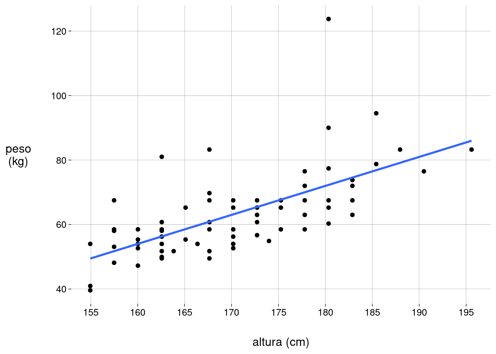 Lembre-se de que, neste exemplo, os resíduos são as diferenças, para cada observação, entre o peso verdadeiro e o peso estimado pela reta de regressão.
No gráfico acima, o resíduo de uma observação é a distância vertical da reta até o ponto. O resíduo é positivo se o ponto está acima da reta, negativo se abaixo.
Os resíduos são usados para verificar se o modelo é adequado.
-
O pacote
gglm(http://graysonwhite.com/gglm/) tem funções para produzir gráficos úteis sobre os resíduos:dados_aumentados %>% ggplot() + stat_fitted_resid() + labs( y = 'resíduos\n(kg)', x = 'pesos estimados (kg)', title = 'Resíduos por pesos estimados' )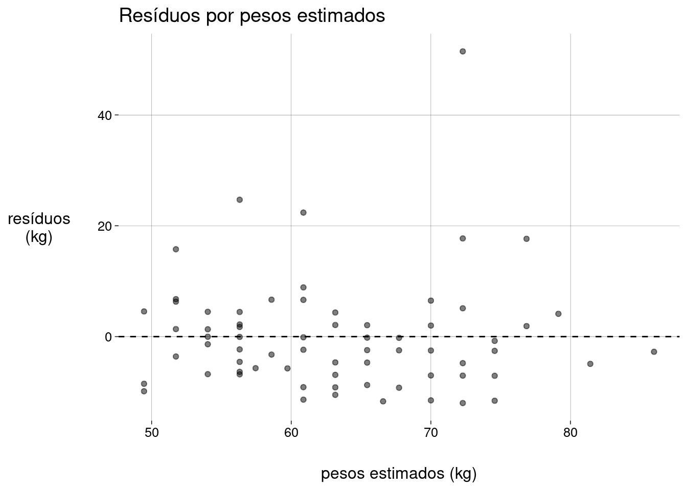dados_aumentados %>% ggplot() + stat_normal_qq() + labs( x = 'quantis da distribuição normal\n(desvios padrão)', y = 'resíduos\npadronizados', title = 'QQ Normal' )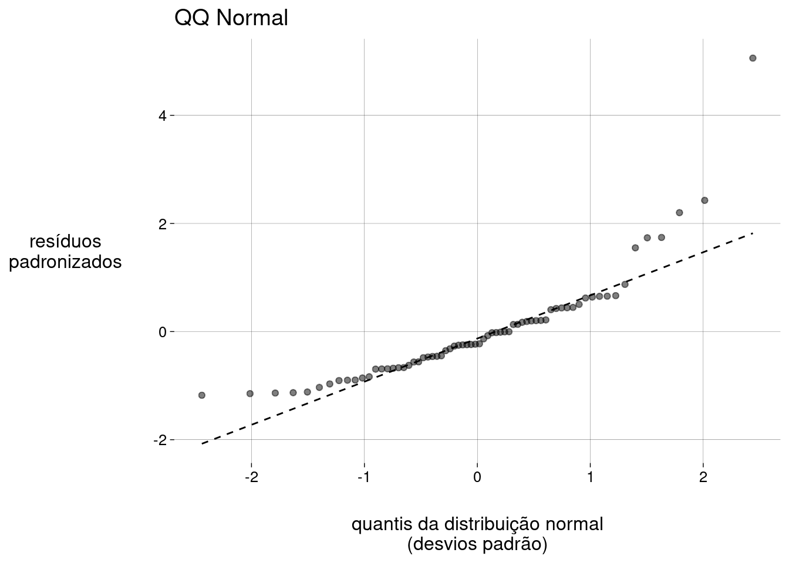 -
Ou, se você não se importar com a feiúra dos gráficos do R base, pode usar a função
plotcom o objeto retornado pela funçãolm:plot(modelo, which = 1:2)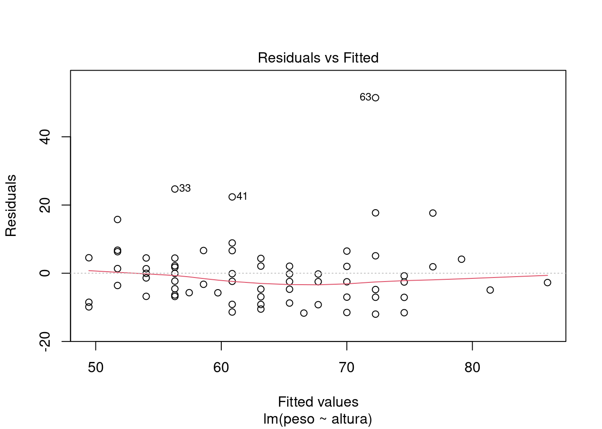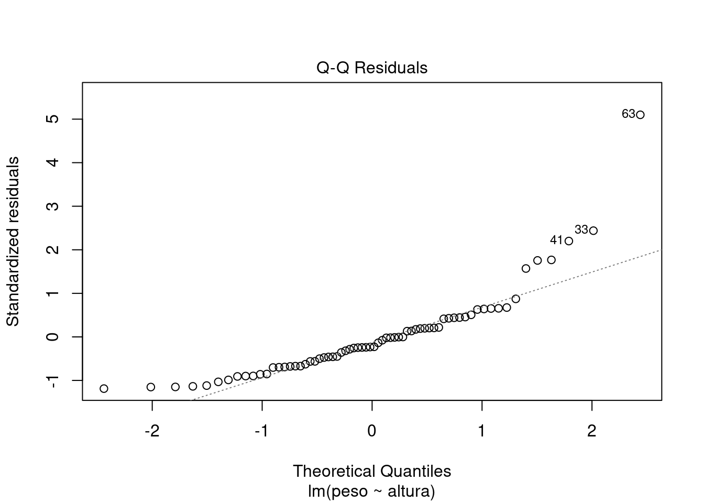
-
Que condições devemos verificar sobre os resíduos?
-
Devemos confirmar que os resíduos seguem uma distribuição normal.
Fazendo um histograma dos resíduos:
dados_aumentados %>% ggplot(aes(.resid)) + geom_histogram(bins = 15) + labs(y = NULL, x = 'resíduo')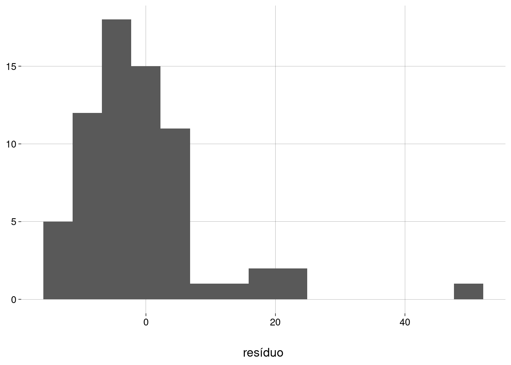Pelo histograma e pelo gráfico QQ mais acima, os resíduos parecem não ter distribuição normal. O problema são os outliers, observações com resíduos altos:
Podemos fazer um teste estatístico de normalidade:
dados_aumentados %>% pull(.resid) %>% shapiro.test()## ## Shapiro-Wilk normality test ## ## data: . ## W = 0,8076, p-value = 0,00000005328Este resultado confirma que não devemos considerar estes resíduos como sendo normais. Se ignorarmos todos os resíduos maiores que \(10\)kg, o teste retorna um resultado mais compatível com a normalidade (mas não muito):
## ## Shapiro-Wilk normality test ## ## data: . ## W = 0,96643, p-value = 0,08763Quando a distribuição dos resíduos não for normal, o que fazer?
-
No nosso exemplo, a causa é a presença de alguns outliers com resíduos maiores que \(10\). São pessoas que têm pesos altos demais para as suas alturas. Se estes outliers estiverem muito próximos da borda esquerda ou da borda direita do scatter plot, eles podem afetar muito a inclinação da reta (tecnicamente, dizemos que eles têm leverage alto). Podemos refazer a regressão sem estes outliers e verificar se isto altera muito a reta. Faça isto como exercício neste exemplo.
Leia mais sobre este problema nesta discussão online e neste artigo.
Em outros casos, isto pode ser um sinal de que a correlação entre as variáveis não é linear. Nesta situação, você pode tentar transformar uma das variáveis, como mostrado no capítulo sobre correlação.
-
-
Devemos confirmar que os resíduos não dependem dos valores estimados.
A idéia é que o scatter plot dos resíduos pelos valores estimados não deve apresentar nenhum padrão. A nuvem de pontos deve se distribuir de maneira uniforme em torno da reta horizontal \(y = 0\) (a média dos resíduos), sem outliers e sem alterações significativas da variância (a “altura” da nuvem).
Repetindo o gráfico de resíduos por pesos estimados:
dados_aumentados %>% ggplot() + stat_fitted_resid() + labs( y = 'resíduos\n(kg)', x = 'pesos estimados (kg)', title = 'Resíduos por pesos estimados' )
De novo, os outliers são o problema. Refaça a regressão sem os outliers e gere os gráficos novamente.
Quando a variância dos resíduos não for constante, o que fazer?
Observe o gráfico abaixo, feito a partir de outros dados:
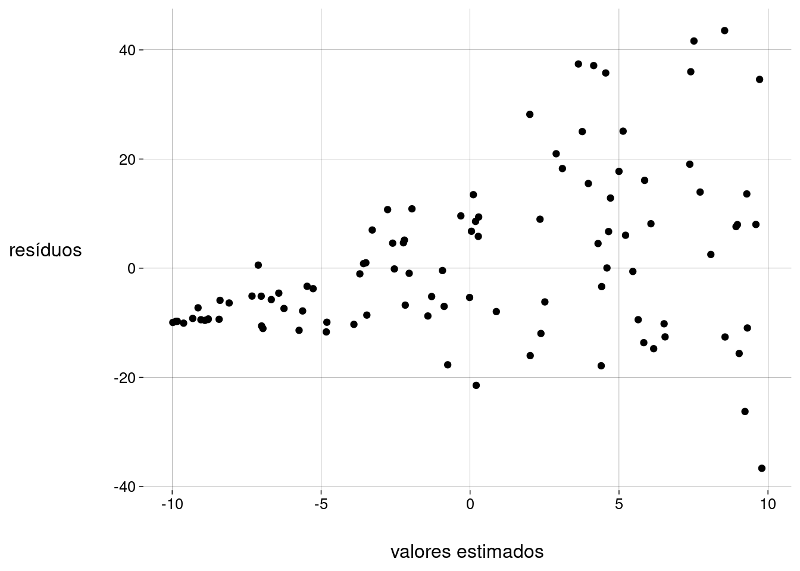Perceba como a variância dos resíduos muda à medida que o valor estimado aumenta. Este fenômeno tem o nome de heterocedasticidade.
Quando isto acontece, podemos refazer a regressão com a variável de resposta transformada por \(\log\) ou por \(\sqrt{\,\,}\) e verificar se a variância dos resíduos ficou mais bem comportada.
Alternativamente, em algumas situações, podemos usar uma variante de regressão linear chamada regressão linear com pesos, que não vamos abordar aqui.
-
15.6 Condições para usar regressão linear
As duas variáveis devem ser quantitativas.
Como a equação da reta de regressão usa a correlação linear, devemos verificar que este é o tipo de correlação entre as duas variáveis. Um scatter plot é uma boa maneira de visualizar isto.
Não deve haver outliers extremos.
Uma vez definida a reta de regressão, devemos examinar os resíduos. No scatter plot de resíduos pelos valores estimados, a nuvem de pontos deve estar espalhada em torno da reta \(y = 0\), sem padrões óbvios, sem curvatura, sem alterações na variância à medida que percorremos a reta horizontal.
15.7 Exemplo: furacões
A pressão do ar no centro de um furacão está relacionada com a velocidade máxima dos ventos.
-
Vamos usar o seguinte conjunto de dados para contruir um modelo linear:
furacoes <- hurricNamed %>% as_tibble() %>% transmute( nome = Name, ano = Year, velocidade = LF.WindsMPH * 1.8, # convertido para km/h pressao = LF.PressureMB # em mbar ) furacoes
15.7.1 Examinar o scatter plot
grafico <- furacoes %>%
ggplot(aes(pressao, velocidade)) +
geom_point() +
labs(
x = 'pressão (mbar)',
y = 'velocidade\nmáxima\n(km/h)',
title = 'Furacões'
)
graficoAs duas variáveis são quantitativas.
A relação entre velocidade e pressão é aproximadamente linear.
Quanto maior a pressão, menor a velocidade. A correlação é negativa.
Há \(3\) potenciais outliers, mas vamos prosseguir mesmo assim.
Os pontos parecem estar dispostos em filas horizontais. Isto é causado pela (falta de) precisão das velocidades, que são valores inteiros no conjunto de dados.
15.7.2 Construir o modelo
##
## Call:
## lm(formula = velocidade ~ pressao, data = furacoes)
##
## Residuals:
## Min 1Q Median 3Q Max
## -92,201 -8,841 0,326 12,777 57,604
##
## Coefficients:
## Estimate Std. Error t value Pr(>|t|)
## (Intercept) 1859,852 109,928 16,92 <0,0000000000000002 ***
## pressao -1,733 0,114 -15,21 <0,0000000000000002 ***
## ---
## Signif. codes: 0 '***' 0,001 '**' 0,01 '*' 0,05 '.' 0,1 ' ' 1
##
## Residual standard error: 21,7 on 92 degrees of freedom
## Multiple R-squared: 0,7154, Adjusted R-squared: 0,7123
## F-statistic: 231,3 on 1 and 92 DF, p-value: < 0,00000000000000022-
A equação é
\[ \widehat{\text{velocidade}} = 1.859{,}85 + (-1{,}73) \cdot \text{pressão} \]
A cada mbar de aumento na pressão está associada uma mudança de \(-1{,}73\)km/h na velocidade.
-
Gráfico:
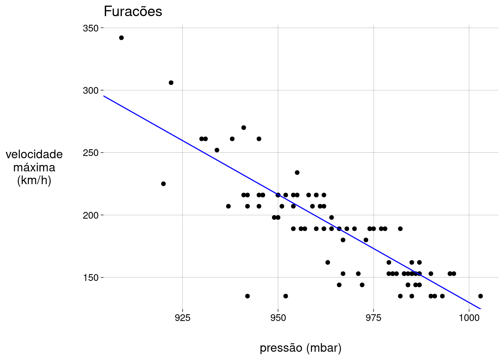
15.7.3 Examinar os resíduos
-
Histograma dos resíduos:
modelo %>% ggplot() + stat_resid_hist(bins = 20) + labs( x = 'resíduos (km/h)', y = NULL, title = 'Histograma dos resíduos' )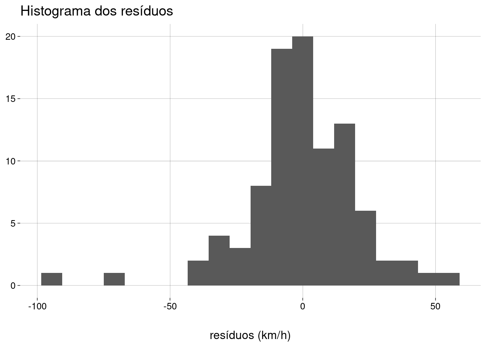 Ignorando os outliers à esquerda, a distribuição dos resíduos é aproximadamente normal.
-
Incluindo todos os resíduos, o teste de normalidade é horrível:
dados_aumentados <- augment_columns(modelo, data = furacoes) dados_aumentados %>% pull(.resid) %>% shapiro.test()## ## Shapiro-Wilk normality test ## ## data: . ## W = 0,92879, p-value = 0,00007165 -
Eliminando os resíduos extremos à esquerda, o resultado é bom:
## ## Shapiro-Wilk normality test ## ## data: . ## W = 0,98682, p-value = 0,487 -
Gráfico QQ dos resíduos:
modelo %>% ggplot() + stat_normal_qq() + labs( x = 'quantis da distribuição normal\n(desvios-padrão)', y = 'resíduos\npadronizados', title = 'QQ Normal' )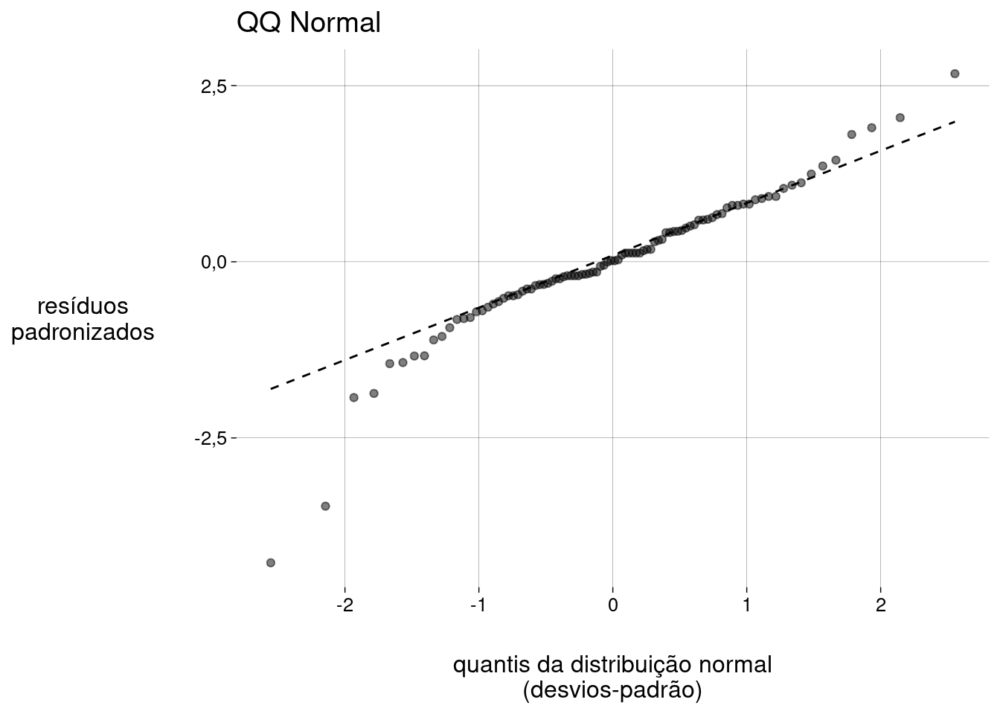 -
Resíduos por valores estimados:
modelo %>% ggplot() + stat_fitted_resid() + labs( y = 'resíduos\n(km/h)', x = 'velocidades estimadas (km/h)', title = 'Resíduos por velocidades estimadas' )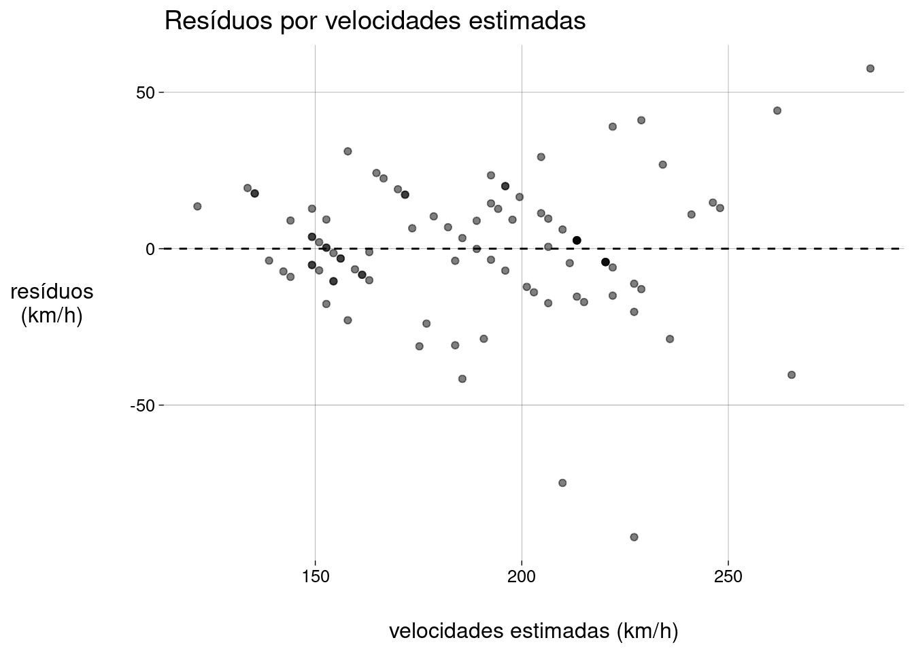 As filas de pontos aparecem porque as velocidades são valores inteiros no conjunto de dados.
Quase todos os resíduos têm valor absoluto menor que \(50\)km/h.
-
Vamos ver as exceções:
dados_aumentados %>% filter(abs(.resid) > 50) %>% select(nome, ano, pressao, velocidade, .fitted, .resid) A variância dos resíduos é menor para velocidades estimadas menores (no lado esquerdo do gráfico). À medida que a velocidade estimada aumenta, a variância aumenta também.
Esta variância não-constante afeta os resultados dos testes estatísticos sobre os coeficientes, um assunto que vamos abordar depois.
15.7.4 Exercícios
O que significa o intercepto de \(1.859{,}85\)km/h?
Qual a previsão do modelo para a velocidade máxima de um furacão com pressão de \(925\)mbar?
-
Na tibble
furacoes, crie uma colunafaixacom os seguintes valores:\[ \text{faixa} = \begin{cases} \text{A} &\text{ se velocidade estimada } < 150 \\ \text{B} &\text{ se } 150 \leq \text{velocidade estimada } < 200 \\ \text{C} &\text{ se velocidade estimada } \geq 200 \end{cases} \]
Usando
group_byesummarize, calcule a variância das velocidades estimadas de cada faixa. É verdade que, à medida que a velocidade estimada aumenta, a variância aumenta também?
15.8 Exemplo: a lei de Moore
A lei de Moore estima que, a cada dois anos, o número de transistores em um circuito integrado dobra.
-
Vamos usar o dataset em https://raw.githubusercontent.com/egarpor/handy/master/datasets/cpus.txt, salvo localmente.
moore <- read_csv2( 'data/cpus.csv' ) %>% select( processador = Processor, transistores = 'Transistor count', ano = 'Date of introduction' ) moore Usando regressão linear, podemos confirmar a lei de Moore para estes dados?
15.8.1 Examinar o scatter plot
moore %>%
ggplot(aes(ano, transistores)) +
geom_point() +
scale_y_continuous(
labels = label_number(scale = 1e-9, decimal.mark = ',', suffix = 'M')
)Como já era de se esperar (pelo próprio enunciado da lei!) a relação não é linear, mas sim exponencial.
-
Então, vamos usar o logaritmo do número de transistores:
grafico <- moore %>% ggplot(aes(ano, ltransistores)) + geom_point() + labs( y = TeX('$\\log_{10}$ (transistores)') ) grafico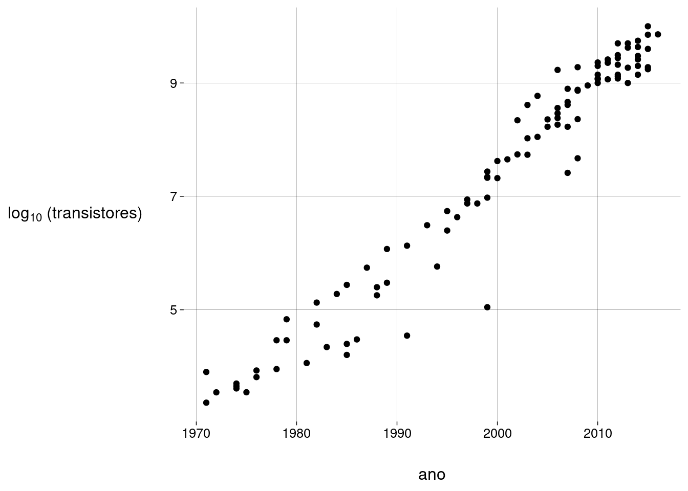 Agora, sim. Bem melhor.
15.8.2 Construir o modelo
modelo <- lm(ltransistores ~ ano, data = moore)
summary(modelo)##
## Call:
## lm(formula = ltransistores ~ ano, data = moore)
##
## Residuals:
## Min 1Q Median 3Q Max
## -2,22795 -0,14242 0,07515 0,22671 0,89568
##
## Coefficients:
## Estimate Std. Error t value Pr(>|t|)
## (Intercept) -295,858219 6,843549 -43,23 <0,0000000000000002 ***
## ano 0,151642 0,003422 44,31 <0,0000000000000002 ***
## ---
## Signif. codes: 0 '***' 0,001 '**' 0,01 '*' 0,05 '.' 0,1 ' ' 1
##
## Residual standard error: 0,4556 on 100 degrees of freedom
## Multiple R-squared: 0,9515, Adjusted R-squared: 0,9511
## F-statistic: 1963 on 1 and 100 DF, p-value: < 0,00000000000000022-
A equação é
\[ \widehat{\text{log(transistores)}} = -295{,}86 + 0{,}15 \cdot \text{ano} \]
A equação diz que, a cada \(2\) anos, o logaritmo do número de transistores (na base \(10\)) aumenta de \(0{,}30\).
-
Chamando de \(t(n)\) o número de transistores no ano \(n\), a equação diz que:
\[ \begin{align*} \log t(n + 2) = \log t(n) + 0{,}30 & \implies t(n + 2) = t(n) \cdot 10^{0{,}30} & \text{(elevando }10\text{ a cada lado)} \\ & \implies t(n + 2) = 2{,}01 \cdot t(n) \end{align*} \]
Isto corresponde ao que a lei de Moore diz: a cada \(2\) anos, o número de transistores aproximadamente dobra.
-
O gráfico fica:
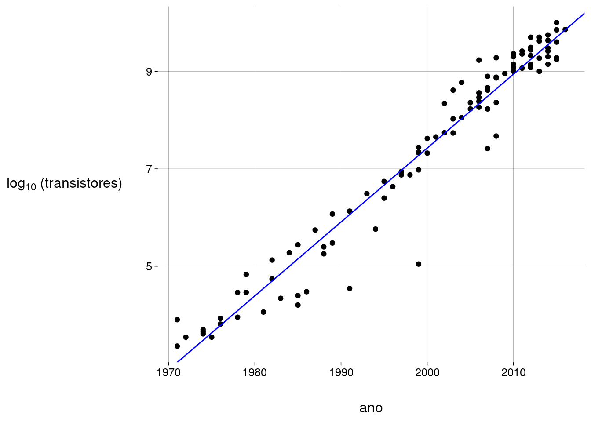
15.8.3 Examinar os resíduos
-
Histograma dos resíduos:
modelo %>% ggplot() + stat_resid_hist(bins = 15) + labs( x = 'resíduos', y = NULL, title = 'Histograma dos resíduos' )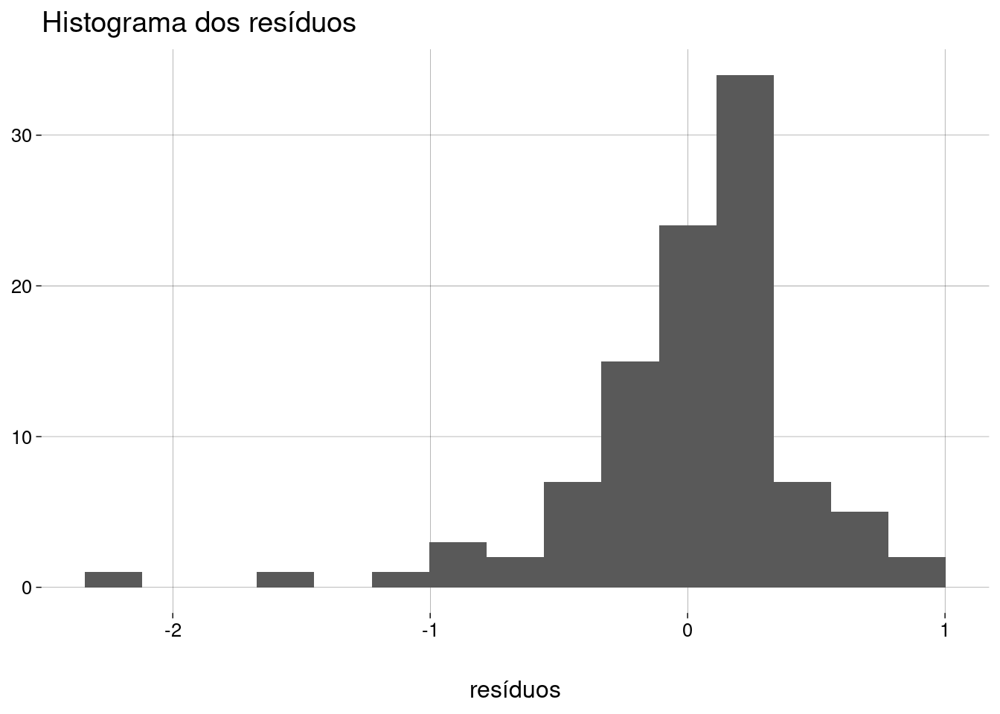 Ignorando os outliers à esquerda, a distribuição dos resíduos é aproximadamente normal.
Um resíduo de \(-1\) no logaritmo (na base \(10\)) do número de transistores equivale a \(\frac{1}{10}\) do número de transistores estimado pela regressão.
Um resíduo de \(-2\) no logaritmo (na base \(10\)) do número de transistores equivale a \(\frac{1}{100}\) do número de transistores estimado pela regressão.
-
Teste de normalidade com todos os resíduos:
dados_aumentados <- augment_columns(modelo, data = moore) dados_aumentados %>% pull(.resid) %>% shapiro.test()## ## Shapiro-Wilk normality test ## ## data: . ## W = 0,87608, p-value = 0,0000000991 -
Sem os outliers:
## ## Shapiro-Wilk normality test ## ## data: . ## W = 0,97828, p-value = 0,1236 -
Gráfico QQ dos resíduos:
modelo %>% ggplot() + stat_normal_qq() + labs( x = 'quantis da distribuição normal\n(desvios-padrão)', y = 'resíduos\npadronizados', title = 'QQ Normal' )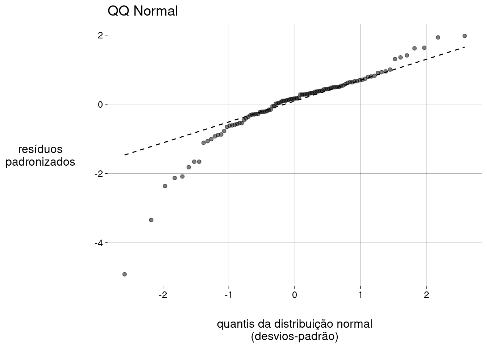 Aqui também ficam nítidos os outliers à esquerda.
-
Resíduos por valores estimados:
modelo %>% ggplot() + stat_fitted_resid() + labs( y = 'resíduos', x = 'log(transistores) estimado', title = 'Resíduos por valores estimados' )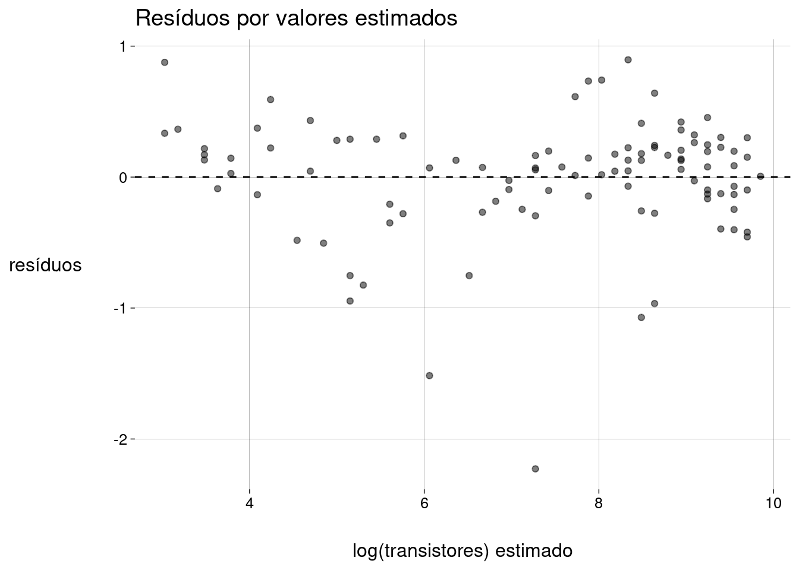 -
De novo, os outliers são óbvios. Vamos listar as CPUs com resíduo menor que \(-0{,}5\):
dados_aumentados %>% filter(.resid < -.5) %>% select(processador, transistores, ano, ltransistores, .fitted, .resid) %>% arrange(.resid) Além disso, parece haver uma certa curvatura na nuvem de pontos, e os resíduos parecem não ter variância constante.
15.8.4 Exercícios
Faça uma pesquisa online e tente descobrir se há algum motivo específico para a maioria dos outliers ser de processadores ARM.
Faça uma pesquisa online sobre processadores lançados nos anos de \(2017\), \(2018\), \(2019\), \(2020\) e \(2021\) (no mínimo um processador de cada ano); compare as quantidades de transistores dos processadores que você achou com as quantidades de transistores previstas para eles pelo modelo linear.
-
A lei de Moore vale para estas GPUs?
gpus <- read_csv2('data/gpus.csv') %>% select( processador = Processor, transistores = 'Transistor count', ano = 'Date of introduction', fabricante = Manufacturer ) gpus